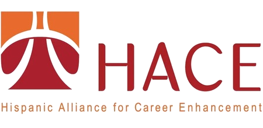
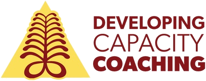
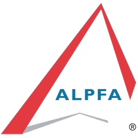
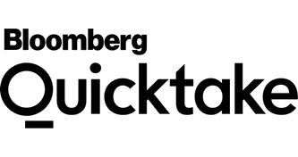
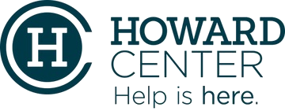
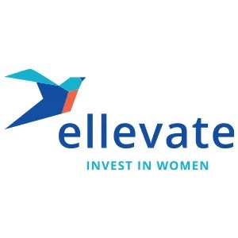
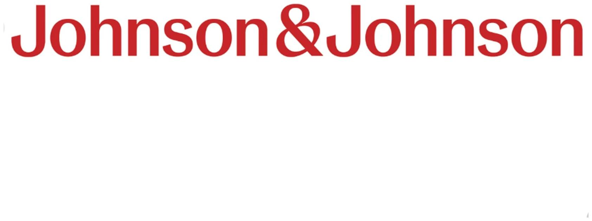
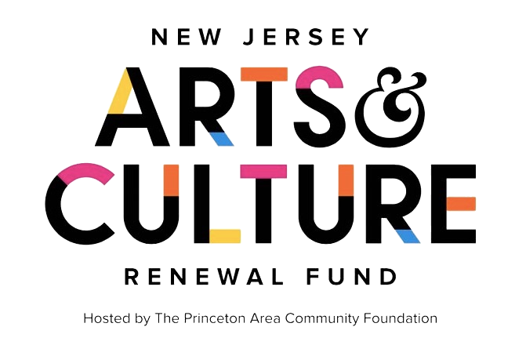
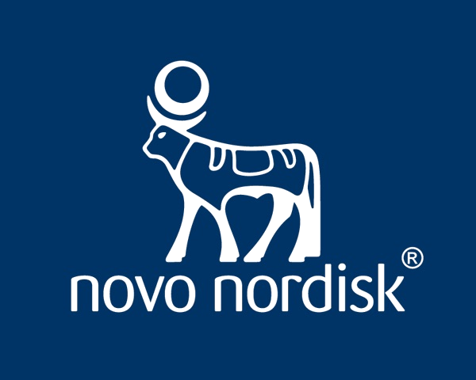
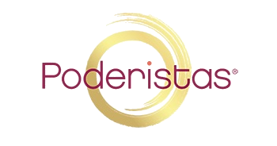

Coaching Women of Color® is a boutique executive coaching & leadership facilitation firm that works directly with senior and executive-level leaders, one-on-one and within their organizations, to strengthen team effectiveness, communication, psychological safety, and team culture. By coaching leaders to lead authentically, navigate power, and adapt to change, we help build workplace cultures where teams thrive, while advancing women of color into positions of influence and impact.
Core Capabilities
Executive Leadership Coaching
Deliver individualized, identity-affirming coaching that empowers leaders to lead with authenticity, navigate power effectively, and achieve sustainable success at senior and executive levels.
Performance Based Coaching
Provides strategic employee relations support to managers navigating performance challenges. Through the RESET Method®, a proprietary five-phase coaching framework, both the leader and team member are engaged to shift behaviors and produce measurable improvements in performance and ownership.
Group Coaching Programs
Facilitate structured group coaching experiences that support leaders in building strategic skills, enhancing leadership capacity, and navigating workplace challenges collectively.
Team Development Programs
Strengthen team dynamics by using the DiSC assessment to improve communication, build trust, and promote collaboration with a focus on psychological safety and equity.
Leadership Retreats
Design and lead immersive retreats that promote reflection, renewal, and leadership transformation aligned with organizational goals.
Keynote Speaking & Workshops
Deliver high-impact keynotes, workshops, and webinars on leadership, equity, resilience, and navigating bias in the workplace.
Key Outcomes
Increased leadership retention
Stronger team engagement
Measurable behavior change
More inclusive culture
Elevated executive presence
Improved organizational equity
Reduced leadership turnover
Enhanced cross-cultural competence
Methodology
Our proprietary RESET Method® combines evidence-based coaching with culturally responsive practices. Every engagement begins with a discovery phase to align goals, followed by tailored programming, ongoing measurement, and executive debrief to ensure lasting organizational impact.
View the RESET Method® →
Available virtually, in-person, or hybrid — nationwide.
The CWC Difference
- ✓Customized, impact-driven solutions
- ✓Collaborative partnerships with organizations
- ✓Trusted across sectors
- ✓Culturally competent support
- ✓Empowering leaders & teams
Industries Served
Healthcare
Financial Services
Education
Technology
Nonprofit
Government
Media
Consumer Goods
Wendy facilitated a board retreat for us. She is a brilliant facilitator whose empathetic approach builds trust quickly. Wendy's superpower is the speed with which she is able to assess needs, navigate dynamics, and coalesce groups around shared goals. We were extremely pleased with the quality and clarity of Wendy's preparation, delivery, and follow up.
— Lynne Toye, Board Leadership
Ready to work together?
Contact Wendy to schedule a discovery call and explore how CWC can support your organization.
Schedule a Discovery Call →









